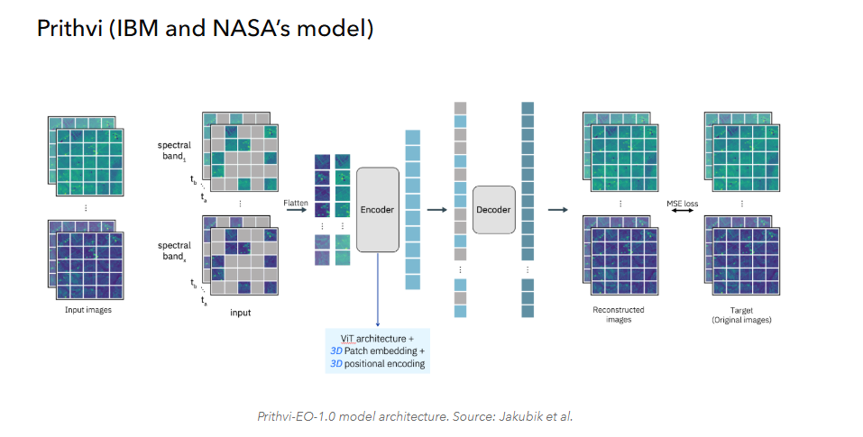

Geospatial Foundation Model–Enhanced GeoAI for Reliable Building-Footprint Mapping
Combines high-resolution UAV imagery with GeoFM embeddings to improve the reliability of building-footprint mapping.
- Research focus
- Use broader semantic and geographic context to reduce uncertain building detections while preserving detailed UAV-derived boundaries.
- Methods & data
- UAV RGB imagery · GeoFM embeddings · multimodal feature integration · building-object validation.
- Current stage
- Ongoing · framework development and experimental design.

Research rationale and objective
Research overview
UAV imagery supplies fine boundary detail, while GeoFM embeddings provide broader semantic and geographic context. The study tests whether combining both sources reduces false detections across different settlement environments.
1. Research motivation
Problem context and research need
Accurate building-footprint information supports urban planning, infrastructure management, disaster-risk assessment, settlement analysis, population estimation, and geospatial database development.
UAV imagery provides highly detailed spatial information, yet RGB-based extraction models can confuse buildings with visually similar surfaces such as roads, concrete areas, bare land, shadows, vegetation, and other artificial objects. Performance may also vary across dense urban areas, rural settlements, and geographically different environments.
Geospatial foundation models offer broader Earth-observation knowledge, but their representations are generally coarser than UAV imagery and cannot directly replace detailed object geometry. The research therefore treats the two sources as complementary rather than interchangeable.
2. Research objective
Conceptual direction
Fine-scale boundary preservation. Retain the detailed spatial and geometric information provided by high-resolution UAV imagery.
Context-aware reliability. Use geospatial foundation-model representations to strengthen semantic, geographic, and neighbourhood context for candidate-building assessment.
Methods and current progress
3. Current research progress
Work presently under development
| Research component | Current focus |
|---|---|
| Conceptual framework | Development of the multi-resolution research framework and evaluation logic. |
| Data preparation | Preparation of UAV imagery and geospatial foundation-model data. |
| Candidate generation | Development of building-candidate preparation and object-level representation. |
| Context representation | Object-level foundation-model features and multi-scale spatial-context representation. |
| Comparative modelling | Design of comparative intelligent-modelling and validation frameworks. |
| Evaluation planning | Spatial and temporal validation planning and experimental preparation. |
Contribution and applications
4. Expected research contribution
Anticipated methodological and applied value
- Reduced false building detections and improved identification of uncertain candidates.
- Preservation of detailed UAV-derived building boundaries.
- Effective use of geospatial foundation-model knowledge in object-level mapping.
- Stronger representation of geographic and neighbourhood context.
- Improved transferability across different settlement environments.
- A reproducible foundation-model-assisted workflow for geospatial applications.
5. Potential applications
Possible domains of use
- Multi-resolution building-footprint mapping
- Cross-settlement model transfer
- Rural and informal-settlement mapping
- Building-database updating
- Exposure and population mapping
6. My contribution
Research responsibilities
- Multimodal research-framework design
- UAV building-candidate preparation
- GeoFM embedding acquisition and analysis
- Object- and neighbourhood-level feature integration
- Comparative modelling and spatial validation
- Model comparison, interpretation and manuscript preparation